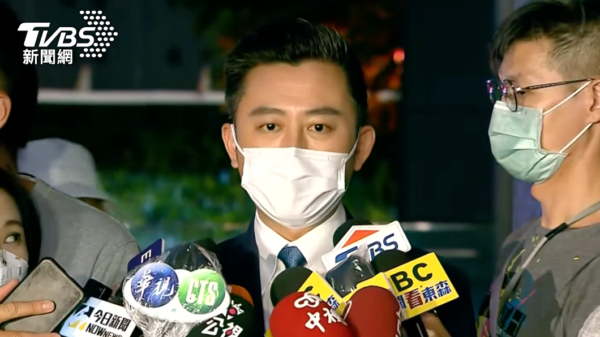

林智堅說他沒有抄襲
台大學術倫理委員會9日召開記者會，註銷民進黨桃園市長參選人林智堅的學位；而中華大學論文的部分，林在10日也親自到中華大學說明。對此，林智堅11日受訪表示，2008年4月和指導老師賀力行、王明朗老師，已經先共同做一次聯合發表，口試是在6月26日結束，竹科期末報告則是在7月份結束，「我認為這是一件事情，是一體的，我的主張沒有抄襲問題」。
「過去也沒有參加過學倫會，昨天是第一次。」林智堅說，審查的過程中他有些訝異，現場有一位老師不願交換名片，看起來沒有想讓他知道身分。學倫會的方式，就是他與律師在一個空間裡和律師面對電視，學倫會委員會提出問題。
林智堅說，昨天一開始做了中華大學論文的聲明，不過不同的委員其實對於問題會一而再、再而三提出，「後來有一位委員我就告訴他說，委員你這問題剛剛提過，我也再一次告訴你我的主張」。
林智堅認為，他的論文是依照竹科計畫，我論文在2008年4月和指導老師賀力行、王明朗老師，已經先共同做一次聯合發表，再來是6月26日口試論文結束，然後竹科期末報告在7月份結束，「我認為這是一件事情，是一體的，我的主張沒有抄襲問題」。

林智堅的學位？？？？
林智堅的學位？？？？
台大覺得林智堅真的有抄襲
台大於9日上午召開記者會，公布民進黨桃園市長參選人林智堅涉嫌抄襲的論文審定結果，確認內容多處嚴重抄襲，撤銷其碩士學位。
台大今日公布林智堅論文審定結果，指出7月接獲檢舉函後，教務處依規定請社科院成立審定委員會，而審定會的報告書及會議紀錄指出，林智堅的論文內容與余正煌的論文有多處嚴重抄襲的情況。
雖然曾3度邀請林智堅及其指導教授、國安局長陳明通說明，但兩人均未出席，因此建議撤銷林智堅碩士學位。
而面對爭議，林智堅將在總幹事鄭運鵬委員及委任律師黃帝穎的陪同下，於9日下午15時召開記者會回應。